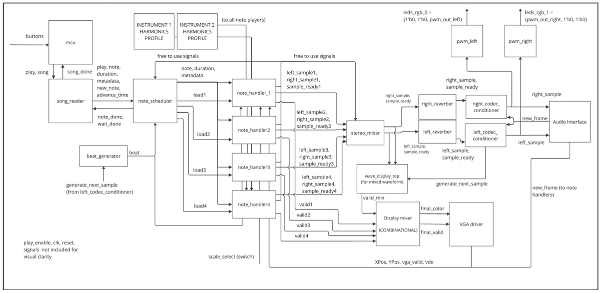

In EE108 Digital Systems. I build a sophisticated music player on a PYNQ-Z1 FPGA board with harmonic, polyphonic, reverb, and stereo features. Also implemented a waveform VGA display to visualize the generated audio output in real time.
